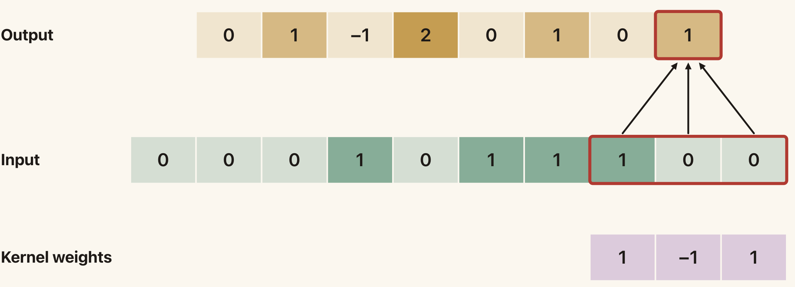
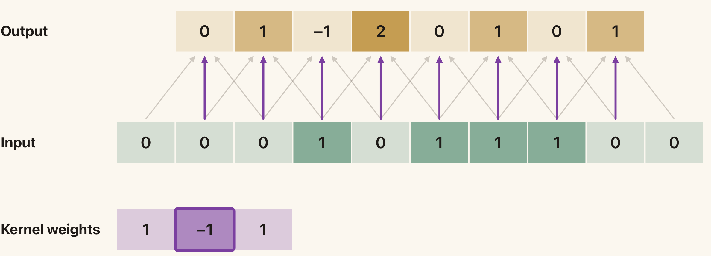
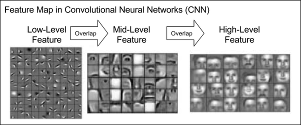
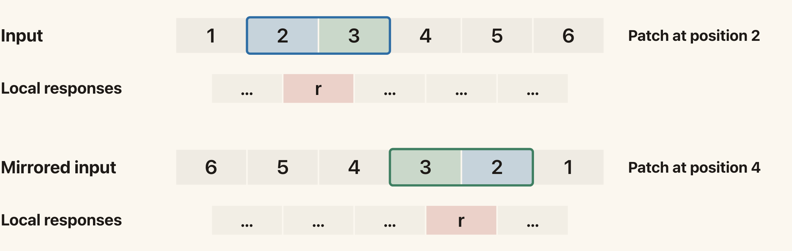
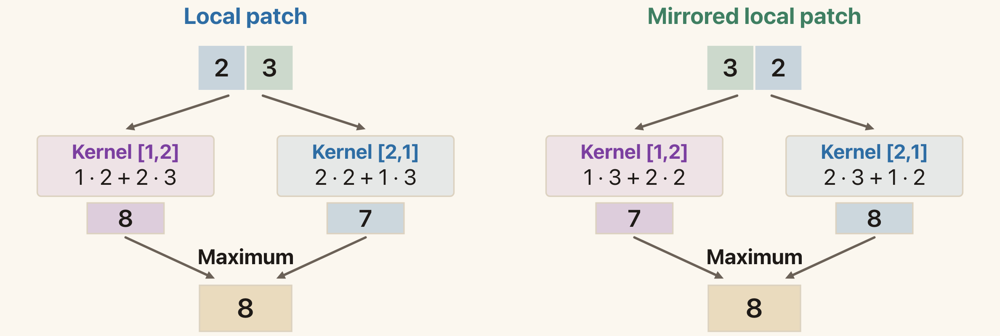
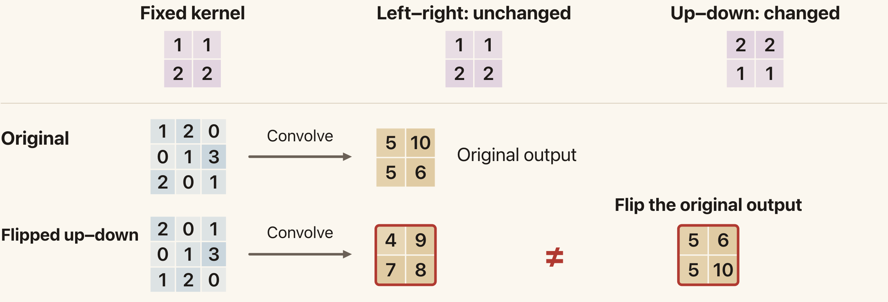
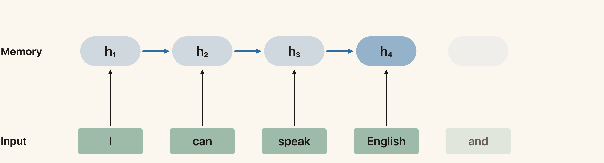
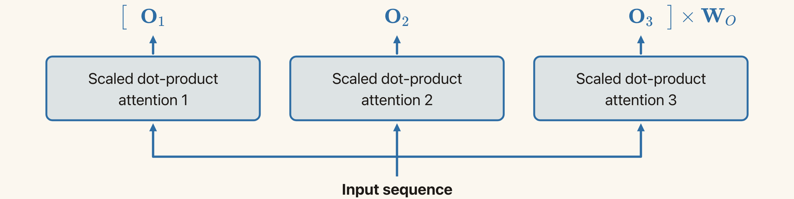

Lecture 8: Neural Networks II — CNNs and Transformers
Summary of Key Ideas
In Lecture 7, we introduced neural networks as a way to learn the features as well as the predictor. We studied the multilayer perceptron (MLP), worked out how to compute its predictions, and saw how backpropagation computes the gradients needed for learning.
In this lecture, we ask another question:
How should we arrange the computations in a neural network?
The answer depends on the kind of data we have and the relationships we expect to find in it. In an image, nearby pixels often belong to the same object or pattern. In a sentence, the order of the words matters, but useful context may also be several words away.
We will study three ways to give a network useful structure. Convolutional neural networks (CNNs) apply small filters across an image, using the same parameters at different locations. Recurrent neural networks (RNNs) read a sequence one element at a time and update a hidden state. Transformers use attention to combine information from different positions in a sequence.
These are still neural networks. Their parameters are learnt from data using a loss function and gradient-based optimisation. What changes is the computation structure, and therefore the assumptions the model makes about the data. We will also design computations whose feature maps change predictably under a flip, then use pooling to obtain predictions that stay unchanged.
Learning Objectives
By the end of this lesson, you should be able to:
- explain how network structure expresses assumptions about the data
- compute convolution, ReLU, and max-pooling outputs
- distinguish sparse connections from weight sharing
- explain the difference between equivariance and invariance
- design a mirror-equivariant operation and obtain invariant outputs by pooling
- describe how an RNN processes a sequence and explain its strengths and limitations
- compute self-attention in four steps, keeping track of the matrix dimensions
- explain the benefits of the Transformer architecture over the RNN.
Network Structure and Inductive Bias
Recall the three ingredients from Lecture 1: data, model, and loss. In Lecture 7, we kept the data and loss appropriate to the task, but made the model more flexible by learning a representation:
\[y(\mathbf{x}) = \mathbf{w}^{\top}\boldsymbol{\phi}_{\theta}(\mathbf{x}).\]
The features \boldsymbol{\phi}_{\theta}(\mathbf{x}) are the results of parameterised computations. A network computes these features through a composition of functions:
\[f_{\theta} = f_L\circ\cdots\circ f_2\circ f_1.\]
The functions f_1,\ldots,f_L do not all have to be fully connected layers. We can choose computations that use nearby inputs, reuse parameters, or combine information from different positions.
The choice is called the network's architecture. It gives the model an inductive bias: a preference for particular kinds of relationships in the data.
For example, suppose we want to recognise a wheel in a photograph. It would be useful to look at nearby pixels together. It would also be useful to recognise the same wheel pattern whether it appears on the left or right of the image. A model that builds in these assumptions may need fewer parameters, and fewer examples, than one that has to discover them entirely from data.
An assumption can also be inappropriate. If the absolute position of a feature matters to the task, we may need to retain or supply position information. The architecture should match the problem we want to solve.
Why Not Use an MLP for Images?
A colour image with 224\times224 pixels and three colour channels contains
\[224\times224\times3 =150{,}528\]
input values.
If the first hidden layer of an MLP has 1,000 units, a fully connected layer has
\[150{,}528\times1{,}000 =150{,}528{,}000\]
weights, before counting the biases.
There are two issues. First, the number of parameters is large. Second, the fully connected layer does not explicitly use the image's spatial structure. Every input pixel can connect to every hidden unit, and the weight on each connection is independent of the others.
Flattening the image does not remove the pixel values, but it gives the network no built-in rule saying that neighbouring pixels should be processed together, or that the same pattern should be recognised at different locations.
CNNs address these issues using local connections and shared parameters.
Convolutional Neural Networks
A Filter Looks for a Small Pattern
Suppose we want to recognise the letter X in an image. Comparing the entire image with a fixed template is fragile: a small change in the shape or position of the X can spoil the match.
Instead, we can look for small pieces of the pattern, such as short diagonal lines. These pieces may occur in several places, and we can combine their responses to recognise a larger pattern.
A filter, also called a kernel, is a small collection of weights. We apply it to a local region of the input. The resulting number describes how that region responds to the filter. Repeating the calculation at different locations gives a feature map.
For the numerical examples, we will use fixed filter weights so that we can follow the arithmetic. In a trained CNN, the filter weights are usually parameters that the network learns.
One-Dimensional Convolution
It is easiest to begin with a one-dimensional input. Consider
\[\mathbf{x} = [0,0,0,1,0,1,1,1,0,0]\]
and a filter
\[\mathbf{w}=[1,-1,1].\]
Place the filter over three neighbouring input values. Multiply matching entries, then add:
\[y_i = w_1x_i+w_2x_{i+1}+w_3x_{i+2}.\]
We then move the filter one position to the right and repeat. Moving by one position is called stride 1.
For the first three output positions,
\[\begin{aligned} y_1&=1(0)-1(0)+1(0)=0,\\ y_2&=1(0)-1(0)+1(1)=1,\\ y_3&=1(0)-1(1)+1(0)=-1. \end{aligned}\]
Continuing gives
\[\boxed{ \mathbf{y} =[0,1,-1,2,0,1,0,1]. }\]
There are eight outputs because there are eight positions where the three-entry filter fits completely inside the ten-entry input. In general, for an input of length N and a filter of length K, stride 1 with no padding gives N-K+1 outputs.

The highlighted window is [1,0,0]. Its weighted sum is 1\cdot1-1\cdot0+1\cdot0=1, which gives the final output.
Optional exploration: the convolution demo lets you step through the output positions.
There is a small terminology point. The operation above is technically cross-correlation, because we use the weights in their given order. Mathematical convolution reverses the filter before applying it. Neural-network implementations commonly call the cross-correlation operation “convolution”, and we will follow that convention here.
Sparse Connections and Weight Sharing
Each output in our example depends on only three input values. This is a local interaction. A fully connected layer with ten inputs and eight outputs would instead contain
\[10\times8=80\]
connections.
Our convolution has
\[3\times8=24\]
connections. This reduction comes from sparse connections: many of the possible input-output connections are absent.
But how many independent weights does the convolution learn?
Only three. We use the same w_1,w_2,w_3 at every location. This is weight sharing.

The purple connections all use w_2=-1. They represent repeated uses of one parameter. Changing that parameter changes all these connections together.
These are two different properties:
- Sparse connections restrict which inputs an output uses.
- Weight sharing restricts which connections can have different parameters.
A locally connected layer could have 24 independent weights. The convolutional layer ties those connections together so that only three weights are independent.
We can also write the operation as a matrix multiplication:
\[\mathbf{y}=\mathbf{W}\mathbf{x},\]
where, treating the input and output as column vectors,
\[\mathbf{W} = \begin{bmatrix} w_1&w_2&w_3&0&0&0&0&0&0&0\\ 0&w_1&w_2&w_3&0&0&0&0&0&0\\ 0&0&w_1&w_2&w_3&0&0&0&0&0\\ \vdots&&&\ddots&\ddots&\ddots&&&&\vdots\\ 0&0&0&0&0&0&0&w_1&w_2&w_3 \end{bmatrix}.\]
The omitted rows continue the same shifted pattern. The matrix has shape 8\times10. Most of its entries are zero, and the same three weights appear repeatedly.
So convolution is still a linear computation before we add an activation function. What makes it special is the structure imposed on the weight matrix.
Convolution on an Image
For an image, we move the filter in two spatial directions. With a 3\times3 filter, each output is a weighted sum of a 3\times3 input region.
For a single input channel and a single filter,
\[Y_{r,s} = \sum_{u=0}^{2}\sum_{v=0}^{2} W_{u,v}X_{r+u,s+v}.\]
Here X_{r,s} is an input pixel value, W_{u,v} is a filter weight, and Y_{r,s} is an output feature value. We omit the bias in this example.
For example, take
\[\mathbf{X} = \begin{bmatrix} 1&1&1&0&0\\ 0&1&1&1&0\\ 0&0&1&1&1\\ 0&0&1&1&0\\ 0&1&1&0&0 \end{bmatrix}, \qquad \mathbf{W} = \begin{bmatrix} 1&0&1\\ 0&1&0\\ 1&0&1 \end{bmatrix}.\]
For the top-left input window, the filter picks out the four corners and the centre. The output is
\[1+1+1+0+1=4.\]
Moving the filter through all valid locations gives
\[\mathbf{Y} = \begin{bmatrix} 4&3&4\\ 2&4&3\\ 2&3&4 \end{bmatrix}.\]
Notice that the output is smaller than the input. With no padding, the filter cannot be centred at every boundary location while remaining completely inside the image. Padding adds values around the boundary to allow more output locations. The padding rule affects what happens near the edges.
Multiple Filters and Channels
One filter produces one feature map. Different filters can respond to different patterns, so a convolutional layer usually learns several of them.
The resulting feature maps form the output channels.
For a colour image, there are already three input channels: red, green, and blue. A standard filter spans a local spatial region across all input channels. For example, a 3\times3 filter applied to an RGB image has
\[3\times3\times3=27\]
weights. Its output at one spatial location adds the contributions from all three channels.
If the layer learns C_{\mathrm{out}} filters, it produces C_{\mathrm{out}} output channels. With C_{\mathrm{in}} input channels and K_h\times K_w filters, a standard convolutional layer has
\[K_hK_wC_{\mathrm{in}}C_{\mathrm{out}}\]
filter weights. If we include one shared bias per output channel, we add C_{\mathrm{out}} parameters.
The same filters are used at every spatial location. The number of filter parameters therefore does not grow with the width and height of the input image.
Translation Equivariance
Suppose a pattern moves to the right in an image. We would like the filter response to move to the right as well.
This property is called translation equivariance. More generally, a function f is equivariant to a transformation g if
\[\boxed{ f(g(\mathbf{x}))=g(f(\mathbf{x})). }\]
In words, transforming the input and then applying the function gives the same result as applying the function and transforming its output.
For convolution, the reason is weight sharing. The calculation used to detect a pattern does not change when the pattern moves.
We can see this directly in one dimension. Let g_s shift a sequence by s positions:
\[(g_s\mathbf{x})_i=x_{i-s}.\]
Then, wherever the required indices are available,
\[\begin{aligned} f(g_s\mathbf{x})_i &=\sum_{j=1}^{K}w_jx_{i+j-1-s}\\ &=f(\mathbf{x})_{i-s}\\ &=(g_sf(\mathbf{x}))_i. \end{aligned}\]
The shifted output contains the same responses, at shifted locations.
There is a boundary condition in this statement. On an infinite grid, stride-1 convolution is exactly translation equivariant. For a finite image, the relationship holds where the relevant input windows remain available. Padding and cropping can change the behaviour near the edges. Subsampling can also break equivariance to a one-pixel shift.
Equivariance and Invariance
Invariance means the output does not change under the transformation:
\[\boxed{ f(g(\mathbf{x}))=f(\mathbf{x}). }\]
The difference matters. For image classification, shifting a cat within the picture should ideally leave the class prediction “cat” unchanged. For a feature map, the responses should move with the cat.
Convolution gives us a useful mechanism for equivariant feature extraction. It does not, by itself, make the entire CNN classifier invariant to translations.
Nonlinear Activations
After convolution, we usually apply a nonlinear activation. A common choice is ReLU:
\[\operatorname{ReLU}(a)=\max(0,a).\]
It acts separately on every feature-map entry. Negative values become zero, and positive values remain unchanged.
For example,
\[\mathbf{A} = \begin{bmatrix} -2&-1&1&2\\ 2&-1&-1&1\\ 1&-1&-1&-2\\ -2&-1&-2&-3 \end{bmatrix}\]
becomes
\[\operatorname{ReLU}(\mathbf{A}) = \begin{bmatrix} 0&0&1&2\\ 2&0&0&1\\ 1&0&0&0\\ 0&0&0&0 \end{bmatrix}.\]
Recall from Lecture 7 that composing linear layers alone still gives a linear function. The activation lets the network build nonlinear relationships.
ReLU also preserves the translation relationship of its input: shifting a feature map and applying the same pointwise activation gives the same result as applying the activation and shifting the map.
Max Pooling
Pooling summarises a region of a feature map.
For max pooling, we retain the largest value in each window. Using a 2\times2 window with stride 2 on the ReLU output above gives
\[\boxed{ \begin{bmatrix} 2&2\\ 1&0 \end{bmatrix}. }\]
For example, the top-left window is
\[\begin{bmatrix} 0&0\\ 2&0 \end{bmatrix},\]
so its pooled value is 2.
Pooling reduces the number of spatial locations. It retains whether a strong response occurred in a region, but loses its exact location within that region.
This can make some small changes in position less important. However, max pooling with stride 2 does not guarantee translation invariance. A one-pixel shift can move a response into a different pooling window and change the pooled output.
Building Higher-Level Features
We can now compose the operations:
\[\text{convolution} \;\longrightarrow\; \text{activation} \;\longrightarrow\; \text{pooling}.\]
This pattern combines local feature extraction, a nonlinearity, and a reduction in spatial resolution. Pooling is optional. A layer can also pass its activated feature map directly to the next layer.
A later convolutional layer takes the earlier feature maps as its inputs. Its local input window can therefore contain responses to several simpler patterns. By combining these responses, the later layer can recognise a more complicated pattern.
For example, early features may respond to edges. Later features may combine edges into shapes or parts, and still later features may combine parts into objects.

Earlier features can be combined into more complex patterns. Feature visualisations: Lee, Grosse, Ranganath and Ng (2009).
This is a useful way to understand composition, although we should not assume that every unit in every trained network corresponds to a neatly named object part.
As layers are stacked, an output can depend on a larger region of the original image. This region is called its receptive field. Local computations can therefore build features that use a much wider context.
Optional exploration: CNN Explainer shows how feature maps change through a small trained network.
Learning Shared Weights
Weight sharing also affects the gradient calculation.
Recall from Lecture 7 that the gradient for an ordinary weighted connection is the receiving unit's error signal multiplied by the input to that connection. A shared filter weight appears in several connections, so its total gradient collects the contribution from every use.
For a one-dimensional pre-activation
\[a_i=\sum_{j=1}^{K}w_jx_{i+j-1}+b,\]
define \delta_i=\partial\mathcal{L}/\partial a_i for the data loss. Then
\[\boxed{ \frac{\partial\mathcal{L}}{\partial w_j} = \sum_i\delta_ix_{i+j-1}. }\]
Each term is still error signal times input. We add them because they all affect the same parameter. The optimiser makes one update to w_j, which changes every connection that uses it.
Other Symmetries and Mirror Equivariance
Translation is one possible transformation of an image. We may also care about reflection or rotation, depending on the task. Building in one symmetry does not automatically give us all the others.
An ordinary convolution need not be equivariant to reflection. The following example shows why.
A Reflection Counterexample
Use stride 1 with no padding and take
\[\mathbf{x}=[0,1,0,0], \qquad \mathbf{w}=[1,2].\]
Convolving first gives
\[f(\mathbf{x})=[2,1,0].\]
Flipping this output gives
\[\operatorname{flip}(f(\mathbf{x}))=[0,1,2].\]
If we instead flip the input first,
\[\operatorname{flip}(\mathbf{x})=[0,0,1,0],\]
and apply the same filter, we obtain
\[f(\operatorname{flip}(\mathbf{x}))=[0,2,1].\]
The outputs differ. The order in which we apply the two operations matters.
Intuitively, the filter has an orientation: it gives a different weight to the left and right entries. Reflecting the input reverses those roles.
Designing an Operation That Is Mirror Equivariant
We want to design a computation f for which
\[f(R\mathbf{x})=R f(\mathbf{x}),\]
where R reverses the entries of a vector. The output feature map should reverse when the input reverses.
Start with a one-dimensional input. Assume stride 1 and equal zero-padding on both ends. Equal padding matters because padding and then reversing must give the same input as reversing and then padding. Unequal padding can break this relationship. For the small numerical examples below, we use no padding. The same reasoning applies when we add equal numbers of zeros at both ends.
What Does a Flip Do to a Local Patch?
Consider the input
\[\mathbf{x}=[1,2,3,4,5,6].\]
The two-entry patch starting at position 2 is [2,3]. Reversing the input gives
\[R\mathbf{x}=[6,5,4,3,2,1].\]
The corresponding patch is now [3,2], starting at position 4. Two things happened:
- The entries within the patch reversed.
- The patch moved to the corresponding mirrored position.
Convolution slides the same local computation across the input. If a patch and its reverse give the same response, that response will appear at the mirrored output position. Applying this reasoning to every patch gives a mirror-equivariant feature map.
Write \rho(\mathbf{p}) for the response to a local patch \mathbf{p}. The property we need is
\[\boxed{\rho(R\mathbf{p})=\rho(\mathbf{p})}\]
for every patch. The patch itself changes when we reverse it. We require its response to stay the same.

If the patch and its reverse both produce response r, that response moves from output position 2 to output position 4. The other patches follow the same rule.
Two Ways to Make the Local Response Invariant
1. Use a Symmetric Kernel
An ordinary filter computes the dot product
\[\rho_{\mathbf{w}}(\mathbf{p})=\mathbf{w}^{\top}\mathbf{p}.\]
Choose weights that read the same forwards and backwards:
\[\mathbf{w}=R\mathbf{w}.\]
For two weights, this requires w_1=w_2. Using \mathbf{w}=[1,1] gives
\[\begin{aligned} \rho_{\mathbf{w}}([2,3])&=1\cdot2+1\cdot3=5,\\ \rho_{\mathbf{w}}([3,2])&=1\cdot3+1\cdot2=5. \end{aligned}\]
Reversing the patch exchanges the two inputs, but they receive the same weight. The response stays unchanged. For a longer kernel, opposite entries must match. For example, [1,2,1] is symmetric.
2. Use a Kernel and Its Reverse
We can also start with any kernel \mathbf{w}. Apply both \mathbf{w} and R\mathbf{w} to each patch, then combine their responses using an operation that does not depend on their order.
For \mathbf{w}=[1,2] and R\mathbf{w}=[2,1], the patch [2,3] gives responses 8 and 7. Reversing the patch gives responses 7 and 8.

The individual responses swap. Their maximum remains 8. Their sum is 15 in either order, and their mean is 7.5 in either order.
We combine the responses at the same spatial position. We keep a separate output for every patch, so the result is still a feature map.
From Local Responses to the Whole Feature Map
Return to the input \mathbf{x}=[0,1,0,0] and kernel \mathbf{w}=[1,2] from the counterexample. Apply both kernels with stride 1 and no padding:
| Input | Response map from [1,2] | Response map from [2,1] | Sum at each position |
|---|---|---|---|
| \mathbf{x}=[0,1,0,0] | [2,1,0] | [1,2,0] | [3,3,0] |
| R\mathbf{x}=[0,0,1,0] | [0,2,1] | [0,1,2] | [0,3,3] |
The summed map reverses with the input. Taking the mean gives [1.5,1.5,0] and [0,1.5,1.5]. Taking the maximum at each position gives [2,2,0] and [0,2,2]. Both also reverse correctly.
To write the argument compactly, let C_{\mathbf{w}} denote convolution with kernel \mathbf{w}. Reversing the input reverses each patch and its position, so
\[C_{\mathbf{w}}(R\mathbf{x})=R\,C_{R\mathbf{w}}(\mathbf{x}).\]
Define the sum of the two response maps as
\[F(\mathbf{x})=C_{\mathbf{w}}(\mathbf{x})+C_{R\mathbf{w}}(\mathbf{x}).\]
Reversing the input exchanges the roles of the kernels and reverses the output maps:
\[\begin{aligned} F(R\mathbf{x}) &=R\,C_{R\mathbf{w}}(\mathbf{x})+R\,C_{\mathbf{w}}(\mathbf{x})\\ &=R\left[C_{\mathbf{w}}(\mathbf{x})+C_{R\mathbf{w}}(\mathbf{x})\right]\\ &=R\,F(\mathbf{x}). \end{aligned}\]
The mean and elementwise maximum work because exchanging their two arguments leaves the result unchanged.
For a sum, we could equivalently use the single symmetric kernel \mathbf{w}+R\mathbf{w}. For example, [1,2]+[2,1]=[3,3]. Taking the maximum instead gives a nonlinear local computation.
Optional exploration: the mirror-equivariance demo lets you change the weights and compare the individual and combined response maps.
How Does This Extend to Images?
In two dimensions, we must specify the direction of the flip. A left–right flip reverses the entries within each row. An up–down flip reverses the order of the rows.
For a left–right symmetric kernel, every row reads the same forwards and backwards. Consider
\[\mathbf{W}=\begin{bmatrix}1&1\\2&2\end{bmatrix}.\]
A left–right flip leaves this kernel unchanged. An up–down flip changes it to
\[\begin{bmatrix}2&2\\1&1\end{bmatrix}.\]
The top and bottom rows have different weights. We therefore get left–right equivariance, but up–down equivariance is not guaranteed. An up–down symmetric kernel would also need matching rows from top to bottom.
The figure below uses stride 1 with no padding. The same kernel is applied to the original image and to the flipped image.

The lower path flips the input up–down before applying the kernel. The map on the far right instead flips the original output. The two maps differ, so this operation is not up–down equivariant.
For example, the original top-left output is 1\cdot1+1\cdot2+2\cdot0+2\cdot1=5. After flipping the input up–down, the new top-left patch gives 1\cdot2+1\cdot0+2\cdot0+2\cdot1=4.
For a left–right flip, the two paths agree:
\[\begin{bmatrix}10&5\\6&5\end{bmatrix}.\]
The guarantee depends on which symmetry we build into the kernel.
From an Equivariant Map to an Invariant Label
Suppose we have a feature map satisfying f(R\mathbf{x})=R f(\mathbf{x}). The entries move when the input is flipped. For a classification task, we may want the final label to stay the same.
Reflection reorders the feature-map entries. Taking their sum, mean, or maximum gives the same result after this reordering. Define
\[g(\mathbf{x})=\operatorname{pool}(f(\mathbf{x})).\]
Then
\[\begin{aligned} g(R\mathbf{x}) &=\operatorname{pool}(f(R\mathbf{x}))\\ &=\operatorname{pool}(R f(\mathbf{x}))\\ &=\operatorname{pool}(f(\mathbf{x}))\\ &=g(\mathbf{x}). \end{aligned}\]
Here we pool over all spatial positions, separately for each feature channel. A classifier that uses only this pooled representation gives the same prediction after reflection.
There are two distinct combinations in our construction:
- Combining the two kernel responses at each position gives a mirror-equivariant feature map.
- Combining all positions in that map gives a mirror-invariant representation.
Global pooling discards spatial arrangement. This is useful when location should not affect the label. Keep the feature map when the output needs to retain location information. Ordinary local pooling does not automatically make the final prediction invariant.
Data Augmentation
We can also show the model reflected examples during training. This is data augmentation. For classification, flip the image and keep its label when the flip preserves the class. Train on both the original and flipped examples.
This encourages the same prediction for both orientations. It does not guarantee exact invariance for every input.
Rotation Invariance and Group Pooling
Suppose an image can appear at any of four orientations separated by 90°, and its class should be the same in all four. Let h(\mathbf{x}) be a score from any fixed network. Its score may change when the image rotates.
Write R for a 90° rotation in this section. Evaluate the same network at each orientation:
\[h(\mathbf{x}),\quad h(R\mathbf{x}),\quad h(R^2\mathbf{x}),\quad h(R^3\mathbf{x}).\]
Define their mean as
\[\boxed{g(\mathbf{x})=\frac14\sum_{k=0}^{3}h(R^k\mathbf{x}).}\]
Four turns return the original image, so R^4\mathbf{x}=\mathbf{x}. Rotating the starting image cycles the same four scores:
\[\begin{aligned} g(R\mathbf{x}) &=\frac14\left[h(R\mathbf{x})+h(R^2\mathbf{x})+h(R^3\mathbf{x})+h(R^4\mathbf{x})\right]\\ &=g(\mathbf{x}). \end{aligned}\]
A sum or maximum also works because reordering the scores leaves it unchanged. This guarantee covers rotations by multiples of 90°. It does not guarantee invariance to other angles.
This is an example of group pooling: combine responses associated with all the transformations in a group. Here the group consists of the four rotations, including doing nothing. Composing or undoing these rotations gives another member of the same group. Rotating the input therefore only reorders the transformations we evaluate.
For mirror invariance, the group has two members: doing nothing and flipping. With R now denoting reflection, we can similarly define
\[g(\mathbf{x})=\frac12\left[h(\mathbf{x})+h(R\mathbf{x})\right].\]
Flipping the input exchanges the two scores, so their mean stays unchanged. The same idea applies to a vector of class scores by combining corresponding entries.
Pooling over transformations and pooling over all positions of an equivariant feature map both obtain invariance by combining values whose order changes. They combine different things: orientations in the rotation construction, and spatial positions in the feature-map construction.
Optional exploration: the rotation demo lets you compare a single orientation score with the mean or maximum over all four orientations.
The common idea is to build a useful assumption into the computation, then reason about what that computation guarantees.
Sequence Data and Recurrent Neural Networks
So far, our input has been an image. Now consider a sequence:
\[\mathbf{x}_1,\mathbf{x}_2,\ldots,\mathbf{x}_T.\]
The subscript indicates a position in the sequence. Examples include words in a sentence, prices over time, and a robot's sequence of actions.
The order matters. “Dog bites man” and “man bites dog” contain the same words but describe different events. Similarly, a price increase followed by a decrease is different from a decrease followed by an increase.
Sequences may also have different lengths. We would like to reuse the same computation and parameters across those lengths.
A Hidden State Carries Information Forward
An RNN processes the inputs one at a time. At position i, it combines the current input with a hidden state from the previous position:
\[\boxed{ \mathbf{h}_i = \sigma\left( \mathbf{W}\mathbf{x}_i + \mathbf{U}\mathbf{h}_{i-1} + \mathbf{b} \right). }\]
Here \sigma is an activation function, such as tanh. It is applied componentwise.
If \mathbf{x}_i\in\mathbb{R}^{D} and \mathbf{h}_i\in\mathbb{R}^{H}, then
\[\mathbf{W}\in\mathbb{R}^{H\times D}, \qquad \mathbf{U}\in\mathbb{R}^{H\times H}, \qquad \mathbf{b}\in\mathbb{R}^{H}.\]
The same parameters are used at every sequence position. We choose an initial state \mathbf{h}_0, often a zero vector, and repeatedly apply the update.
After the first input, \mathbf{h}_1 depends on \mathbf{x}_1. After the second, \mathbf{h}_2 depends on \mathbf{x}_2 and \mathbf{h}_1, and therefore indirectly on \mathbf{x}_1 as well.
The hidden state is a vector of activations that forms a learnt summary of the inputs seen so far.

After reading “English”, \mathbf{h}_4 summarises the first four inputs. The next update combines this state with the input for “and”. Each update needs the previous state.
The network can use a state to produce an output at each position, or use the final state for a prediction about the whole sequence. The appropriate output and loss depend on the task, just as they did for the MLP.
Strengths and Limitations of RNNs
An RNN naturally uses order because the current state depends on the preceding state. It can process variable-length sequences, and its shared parameters do not have to grow with the sequence length.
Three limitations follow from this computation.
First, the gradient for an early computation can pass through many subsequent state updates. Repeated multiplication by derivatives can make the gradient very small or very large. These are the vanishing-gradient and exploding-gradient problems. Information from much earlier in the sequence can therefore be difficult to learn to use.
Second, the basic RNN must pass information forward through a fixed-size state. In a model that uses only the final state, all relevant information from the input sequence must be represented there. This creates a memory bottleneck.
Third, the state updates are sequential: we need \mathbf{h}_{i-1} before computing \mathbf{h}_i. We cannot compute all of these states independently at the same time.
These limitations motivate a computation that can access different sequence positions more directly.
Attention and Transformers
Attention as a Soft Dictionary Lookup
Suppose we want to translate a sentence. A simple approach would be to look up each word in a dictionary.
Consider the sentence
我给她买了一台电脑
A literal lookup of the separate characters gives something like
I give her buy _ one tower electricity brain.
The intended sentence is “I bought her a computer.”
The problem is that meaning depends on context and on combinations of characters. Looking up each item independently cannot decide which information to combine.
Attention gives us a soft lookup. For the output currently being computed, we assign a weight to each input position and combine information using those weights.
Different outputs can use different weights. When producing “computer”, the model can use the combination 电 and 脑. When producing “her”, different positions are useful.
Queries, Keys, and Values
A useful way to organise the lookup is to give it three ingredients:
- A query describes what information the current computation is looking for.
- A key describes information that can be compared with the query.
- A value contains the information we will combine.
These are vector representations computed using learnt parameters.
We compare a query with the keys, turn the comparison scores into weights, and use those weights to combine the values. A large weight means that a particular value contributes strongly to the current output.
In self-attention, the queries, keys, and values are all computed from the same input sequence. Each position can obtain information from other positions in that sequence, including itself.
Computing Self-Attention
We can organise the calculation into four steps. We store one token representation per row.
Step 1: Token Embeddings and Position Information
A token is one input unit. Depending on the application, it may be a word, a subword, or a character.
We represent token i using a vector \hat{\mathbf{e}}_i\in\mathbb{R}^{D}. This is its embedding. The same token may occur at several positions, so the token embedding alone does not tell us where it appears.
One way to supply position information is to add a position vector:
\[\mathbf{e}_i = \hat{\mathbf{e}}_i+\mathbf{p}_i.\]
Both vectors have dimension D. The token embedding supplies information about the token, while \mathbf{p}_i supplies information about its position.
We then collect the vectors into a matrix with one row per token:
\[\boxed{ \mathbf{E} = \begin{bmatrix} \mathbf{e}_1^{\top}\\ \mathbf{e}_2^{\top}\\ \vdots\\ \mathbf{e}_T^{\top} \end{bmatrix} \in\mathbb{R}^{T\times D}. }\]
The individual \mathbf{e}_i are column vectors. Taking their transposes places them in the rows of \mathbf{E}. This convention determines where the transposes appear in the attention calculation.
Adding position vectors is one way to provide position information. We use this construction throughout these notes.
Step 2: Compute Queries, Keys, and Values
Use three parameter matrices to transform the input representations:
\[\boxed{ \mathbf{Q}=\mathbf{E}\mathbf{W}_Q, \qquad \mathbf{K}=\mathbf{E}\mathbf{W}_K, \qquad \mathbf{V}=\mathbf{E}\mathbf{W}_V. }\]
For query and key dimension d_k, and value dimension d_v, the shapes are
\[\mathbf{W}_Q,\mathbf{W}_K\in\mathbb{R}^{D\times d_k}, \qquad \mathbf{W}_V\in\mathbb{R}^{D\times d_v},\]
and therefore
\[\mathbf{Q},\mathbf{K}\in\mathbb{R}^{T\times d_k}, \qquad \mathbf{V}\in\mathbb{R}^{T\times d_v}.\]
Queries and keys must have the same dimension because we will take their dot products. The values can have a different dimension.
The matrices \mathbf{W}_Q,\mathbf{W}_K,\mathbf{W}_V are parameters learnt during training. The matrices \mathbf{Q},\mathbf{K},\mathbf{V} are the results of applying those parameters to the current input.
The same projection matrices act on every row, so the parameters are shared across positions.
Step 3: Compute Attention Weights
For query \mathbf{q}_i at position i and key \mathbf{k}_j at position j, compute a score
\[a_{ij} = \frac{\mathbf{q}_i^{\top}\mathbf{k}_j}{\sqrt{d_k}}.\]
The dot product measures the match in the learnt query-key space.
Now apply softmax over the keys for each query:
\[S_{ij} = \frac{\exp(a_{ij})} {\sum_{\ell=1}^{T}\exp(a_{i\ell})}.\]
For a fixed i, the weights are non-negative and sum to one:
\[S_{ij}\geq0, \qquad \sum_{j=1}^{T}S_{ij}=1.\]
In matrix form,
\[\boxed{ \mathbf{S} = \operatorname{softmax}_{\mathrm{row}} \left( \frac{\mathbf{Q}\mathbf{K}^{\top}}{\sqrt{d_k}} \right). }\]
Since \mathbf{Q} is T\times d_k and \mathbf{K}^{\top} is d_k\times T, the score matrix and \mathbf{S} both have shape T\times T.
Row i contains the weights used by query i. Column j corresponds to key j and, in the next step, value j.
Why Divide by the Square Root?
A dot product adds d_k terms. As the dimension grows, the scores can become large in magnitude, making softmax very concentrated and its gradients small.
Under the simplifying assumption that the query and key components are mutually independent, with mean zero and variance one, the dot product has variance d_k. Dividing by \sqrt{d_k} keeps its variance at one under these assumptions.
This motivates the scale used in the computation. The divisor is the square root of the key dimension, not the number of tokens.
Step 4: Combine the Value Vectors
The output at position i is a weighted sum:
\[\mathbf{o}_i = \sum_{j=1}^{T}S_{ij}\mathbf{v}_j.\]
Collecting these outputs into rows gives
\[\boxed{ \mathbf{O}=\mathbf{S}\mathbf{V}. }\]
The multiplication has shapes
\[(T\times T)(T\times d_v) = T\times d_v.\]
Each position now has a representation that combines information from the sequence. The weights depend on the input, so the combination can change from one example to another.
For fixed value vectors, each output is a convex combination of those values because the weights are non-negative and sum to one. A complete Transformer also applies other computations, including output projections and nonlinear layers.
The four steps together give
\[\boxed{ \mathbf{O} = \operatorname{softmax}_{\mathrm{row}} \left( \frac{ (\mathbf{E}\mathbf{W}_Q) (\mathbf{E}\mathbf{W}_K)^{\top} }{\sqrt{d_k}} \right) \mathbf{E}\mathbf{W}_V. }\]
The attention weights describe how much information to read from different positions. They are not, by themselves, probabilities of output words or class labels.
Multi-Head Attention
One attention head uses one set of query, key, and value projections. Multi-head attention learns several sets.
For head j,
\[\mathbf{Q}_j=\mathbf{E}\mathbf{W}_{Q,j}, \qquad \mathbf{K}_j=\mathbf{E}\mathbf{W}_{K,j}, \qquad \mathbf{V}_j=\mathbf{E}\mathbf{W}_{V,j},\]
and
\[\mathbf{O}_j = \operatorname{softmax}_{\mathrm{row}} \left( \frac{\mathbf{Q}_j\mathbf{K}_j^{\top}}{\sqrt{d_k}} \right)\mathbf{V}_j.\]
We concatenate the head outputs along their feature dimension and apply an output projection:
\[\boxed{ \mathbf{O}_{\mathrm{multi}} = \operatorname{Concat} (\mathbf{O}_1,\ldots,\mathbf{O}_h)\mathbf{W}_O. }\]
If each head produces d_v features, the concatenation has shape T\times hd_v. Choosing \mathbf{W}_O\in\mathbb{R}^{hd_v\times D} gives a T\times D result.
Different projections allow different heads to use different relationships in the same input. For example, one may put weight on nearby context while another uses information further away. These roles can emerge during learning. We do not assign them to the heads in advance.

Each head has its own query, key, and value projections. Concatenation joins the head outputs along the feature dimension. The shared output projection combines those features.
A Transformer Block
A block is a group of computations that we repeat to build a deeper network. It takes a representation for every token and returns an updated representation for every token. Different blocks normally learn different parameters.
A basic Transformer block has two main computations:
- Multi-head self-attention lets each token gather information from other tokens.
- A feed-forward network is a small MLP applied separately to each token. It transforms that token's features after attention has supplied context. Within a block, the same MLP parameters are used at every position.
For example, attention can bring information about “dog” into the representation of “bites”. The MLP then processes the resulting features at the “bites” position. Stacking blocks repeats this process, so later blocks work with representations that already contain context.
There are two supporting operations. A residual connection adds the input of a computation to its output. For a function F, this gives
\[\mathbf{y}=\mathbf{x}+F(\mathbf{x}).\]
The function learns an update to the existing representation. The addition also provides a direct route for gradients. This helps with training deep networks. He et al., Deep Residual Learning.
Layer normalisation centres and rescales the feature values within each token's vector, then applies a learnt scale and offset. It helps control the scale of the representations. It does not combine different tokens. Ba et al., Layer Normalization.
Let \mathbf{H}\in\mathbb{R}^{T\times D} contain the current token representations as rows. One arrangement, used in the original Transformer encoder, is
\[\begin{aligned} \mathbf{U} &=\operatorname{LN}_1\!\left(\mathbf{H}+\operatorname{MultiHead}(\mathbf{H})\right),\\ \mathbf{H}_{\mathrm{next}} &=\operatorname{LN}_2\!\left(\mathbf{U}+\operatorname{FFN}(\mathbf{U})\right). \end{aligned}\]
Here \operatorname{LN} means layer normalisation and \operatorname{FFN} is the MLP applied to each row. Both additions combine matrices of shape T\times D. Each block returns that same shape, ready for the next block. Some variants place normalisation before attention and the MLP. Vaswani et al., §3.1.
Positions within an attention layer can be computed in parallel. The next block still needs the previous block's outputs.
Which Gradient Problems Remain?
The comparison with RNNs concerns the path between distant sequence positions. In a basic RNN, information from an early token must pass through successive state updates to reach a much later token. Full self-attention provides a direct connection between the two positions.
This does not guarantee that all gradients will be well behaved. Two problems can remain:
- Gradients can shrink or grow through network depth. Backpropagation still applies the chain rule through the stack of blocks. Small gradients can make some parameters learn slowly. Large gradients can cause unstable updates. Residual connections help, but do not guarantee a useful gradient at every parameter. For a scalar residual addition, y=x+F(x) gives dy/dx=1+F'(x), which can still be small or large.
- Softmax can become saturated. If one attention score dominates, its weight is close to one and the other weights are close to zero. The derivatives of these weights with respect to the scores become small. Learning how to change the attention pattern can then be slow. This is one reason for dividing query–key dot products by \sqrt{d_k}. It does not mean every gradient in the block vanishes. Vaswani et al., §3.2.1.
The placement of normalisation also matters. Xiong et al. show that the original arrangement can have large expected parameter gradients near the output at initialisation. Starting with a large learning rate can then destabilise training. A learning-rate warm-up starts with small steps and gradually increases them. Moving normalisation inside the residual branches improves the initial gradient behaviour in their analysis. Xiong et al., On Layer Normalization in the Transformer Architecture.
Attention shortens the route between distant tokens. Training the resulting deep network still requires care.
Why Position Information Matters
Consider self-attention without position information, where every token can attend to every token. What happens if we reorder the input rows?
The outputs are reordered in the same way.
To see why, let \mathbf{P} be a permutation matrix that reorders the rows of \mathbf{E}. The new queries, keys, and values are
\[\mathbf{Q}'=\mathbf{P}\mathbf{Q}, \qquad \mathbf{K}'=\mathbf{P}\mathbf{K}, \qquad \mathbf{V}'=\mathbf{P}\mathbf{V}.\]
The score matrix becomes
\[\mathbf{Q}'\mathbf{K}'^{\top} = \mathbf{P}\mathbf{Q}\mathbf{K}^{\top}\mathbf{P}^{\top}.\]
This reorders the rows and columns of the original scores. Applying row-wise softmax therefore gives
\[\mathbf{S}'=\mathbf{P}\mathbf{S}\mathbf{P}^{\top}.\]
Finally,
\[\begin{aligned} \mathbf{O}' &=\mathbf{S}'\mathbf{V}'\\ &=\mathbf{P}\mathbf{S}\mathbf{P}^{\top} \mathbf{P}\mathbf{V}\\ &=\mathbf{P}\mathbf{S}\mathbf{V}\\ &=\mathbf{P}\mathbf{O}. \end{aligned}\]
Thus this self-attention computation is permutation equivariant:
\[\boxed{ f(\mathbf{P}\mathbf{E})=\mathbf{P}f(\mathbf{E}). }\]
Equivariance does not mean that the output matrix stays unchanged. It means that the output follows the same reordering as the input.
Without position information, reordering “dog bites man” into “man bites dog” simply reorders the corresponding token outputs. The attention computation has no information saying which word came first.
Position vectors address this issue. When we move a token to another position, it receives that position's vector. Swapping tokens while keeping the position vectors at their original locations changes the input beyond merely reordering the original rows.
Predicting the Next Token
For next-token prediction, a model should only use tokens that are already available. During training, the full sentence may be present, but a prediction at position i must not read future tokens.
A causal mask enforces this restriction. Before applying softmax, we set the score for an unavailable future position to -\infty:
\[a_{ij}=-\infty \qquad\text{for }j>i.\]
Its softmax weight is then zero. Each position can use the current token and earlier tokens to predict the next one.
The final representation is passed through an output layer and a softmax over the vocabulary, giving
\[p(t_{i+1}\mid t_1,\ldots,t_i).\]
This returns us to the categorical distribution and cross-entropy from Lecture 3. For a known training sequence, the loss can sum the negative log probabilities of the observed next tokens.
Attention weights decide which representations to combine. Vocabulary probabilities describe the model's prediction over possible next tokens.
A causal mask depends on sequence order. The earlier permutation-equivariance argument assumed that every position could attend to every other position, so it does not apply to arbitrary reorderings with this fixed mask.
With all training tokens available, masked attention can compute many positions in parallel. Generating new text one token at a time still requires the newly generated tokens before continuing.
The Cost of Full Attention
Full self-attention compares each of T queries with T keys. It therefore forms T^2 scores.
The score calculation costs O(T^2d_k) arithmetic operations, and explicitly storing the attention weights uses O(T^2) entries. Combining values also involves all these query-value pairs.
This allows direct interactions between distant positions, but it becomes expensive for long sequences.
Transformers also do not eliminate every optimisation difficulty. Gradients still pass through the depth of the network. RNNs remain another useful architecture when their sequential computation and state representation suit the problem.
Summary
A neural network learns representations through parameterised computations. The structure of those computations expresses assumptions about the data.
| Architecture | Main computation | Assumption about the data |
|---|---|---|
| CNN | Apply local filters with shared weights | Local patterns can occur at different locations |
| RNN | Update a hidden state in sequence order | Earlier inputs provide context for later inputs |
| Transformer | Combine representations using attention | Useful context can come from different, possibly distant positions |
For CNNs, keep the distinction between sparse connections and weight sharing clear. Convolution, activation, and pooling have different roles. Equivariance means the output transforms with the input. Invariance means the output stays unchanged. The symmetry depends on the whole computation, including padding and subsampling.
For RNNs, understand how the current input and previous state determine the new state, and why this creates both useful memory and a sequential dependency.
For attention, you should be able to follow the four steps:
- Represent the tokens and supply position information.
- Compute queries, keys, and values using learnt projections.
- Compare queries with keys, scale the scores, and apply row-wise softmax.
- Use the weights to combine the values.
The reflection example shows how to reason from a local operation to the whole feature map. Make the local response invariant to patch reversal, then apply that operation at every position. The resulting map is mirror-equivariant. Pooling over all positions can give an invariant prediction. Pooling over a complete set of transformed inputs is another way to obtain invariance.
The architecture defines which computations are available and how information can move through the network. Data and the loss then determine how we learn the parameters of those computations.
Further Reading
- PRML §5.5.6 gives a short treatment of convolutional networks. It does not cover Transformers.
- CNN Explainer lets you inspect a small trained CNN.
- Vaswani et al., Attention Is All You Need, introduces the Transformer. Sections 3.2–3.5 expand on attention, feed-forward networks, embeddings, and position information.
- Cohen and Welling, Group Equivariant Convolutional Networks, develops equivariant convolutions and pooling over transformations.